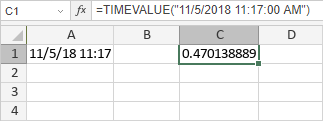

TIMEVALUE Funkcija
TIMEVALUE funkcija je jedna od funkcija za datum i vreme. Koristi se za vraćanje serijskog broja vremena.
Sintaksa
TIMEVALUE(time_text)
TIMEVALUE funkcija ima sledeći argument:
| Argument | Opis |
|---|---|
| time_text | Niz karaktera koji predstavlja vreme, npr. "4:30 PM" ili "16:30". |
Napomene
Kako primeniti TIMEVALUE funkciju.
Primeri
Slika ispod prikazuje rezultat koji vraća TIMEVALUE funkcija.
